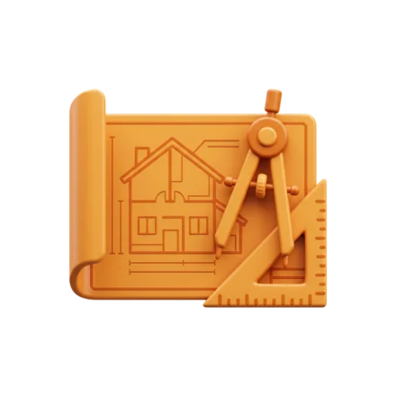
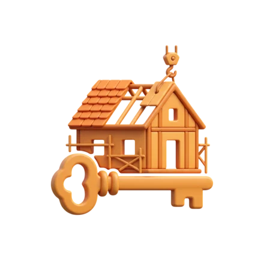
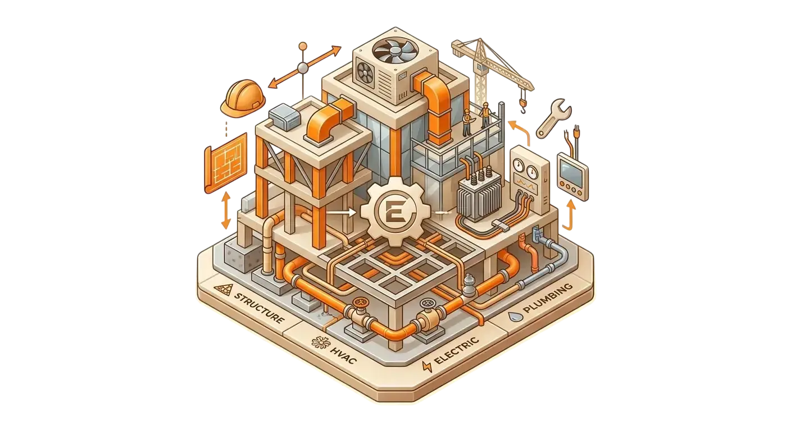
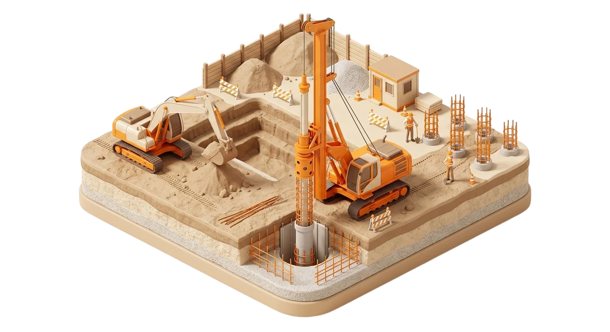
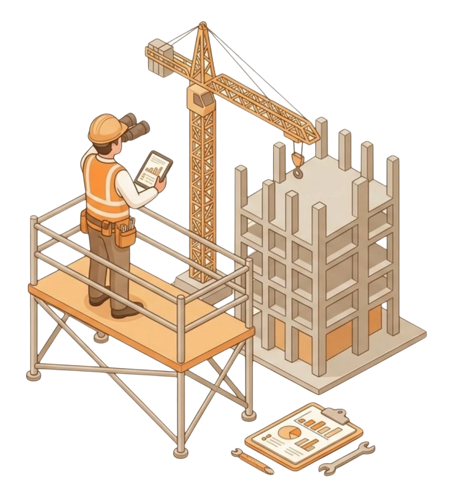
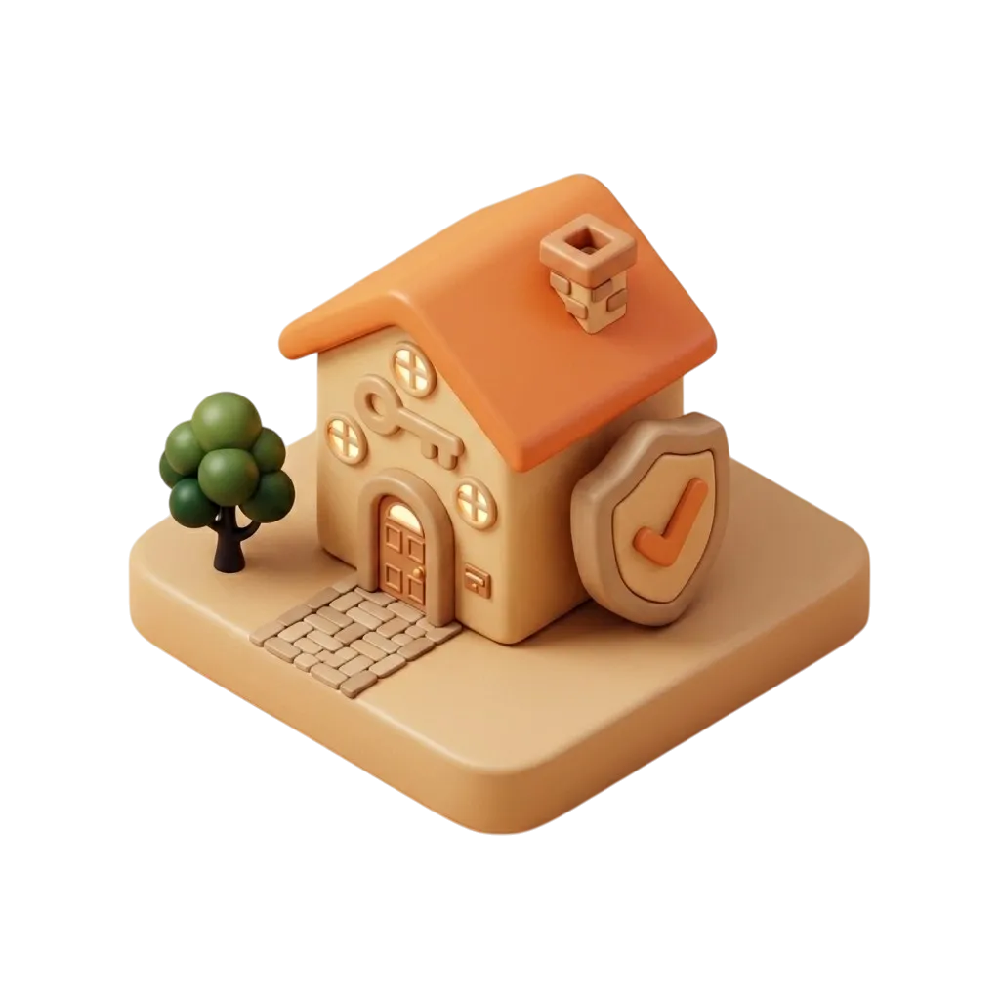

ПОЛНЫЙ ЦИКЛ
СТРОИТЕЛЬСТВА

Разрабатываем индивидуальные проекты коттеджей с учётом рельефа, климата Крыма и пожеланий заказчика. Полный комплект рабочей документации.

От фундамента до кровли — все виды строительно-монтажных работ силами собственной бригады. Контроль качества на каждом этапе.

Монтаж электрики, водоснабжения, канализации, отопления и вентиляции. Подключение к централизованным сетям или автономные решения.
Финишные работы любого уровня сложности — от базового стандарта до премиальной отделки натуральными материалами.

Подготовка участка, разработка котлованов, устройство фундаментов. Собственная спецтехника — без ожидания и посредников.

Технический надзор на объектах сторонних подрядчиков, согласование документации, помощь в получении разрешения на строительство.

Ваш дом построен — дальше мы берём заботу на себя. Обслуживание, сезонная подготовка, контроль состояния и сдача в аренду под ключ: от поиска арендаторов до заселения и отчётности. Вы получаете доход — мы решаем всё остальное.